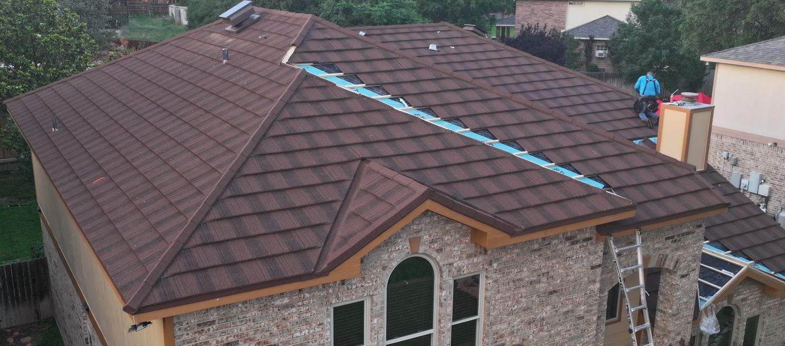
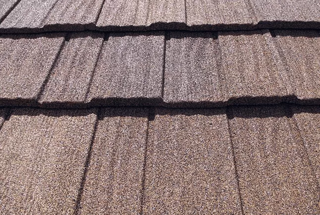
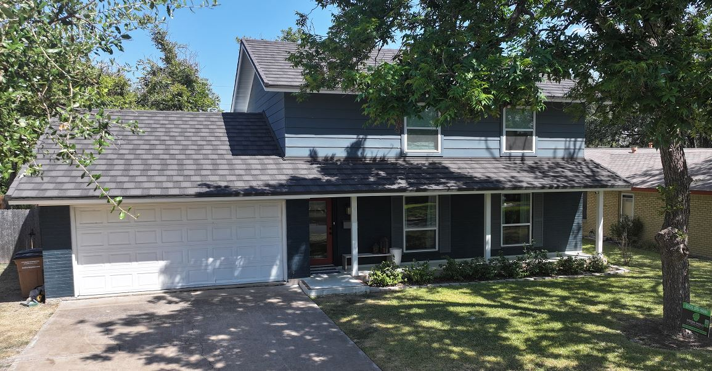

Stone Coated Steel Roofing: An Overview
A Long-Lasting, Beautiful, and Storm-Resistant Roofing Option for Central Texas Homes
When it comes to protecting your home from hail, high winds, and harsh Texas sun, stone coated steel metal roofing is one of the most advanced roofing systems available today. Homeowners across Austin, San Antonio, and the surrounding Hill Country are increasingly turning to this product for its unbeatable combination of strength, beauty, and longevity.

What Is Stone Coated Steel Roofing?
Stone coated steel is a metal roofing product consisting of a base sheet of high-quality galvanized steel with a layer of natural stone granules adhered to the surface to act as a protective barrier from UV radiation, hail, and other environmental factors.
The steel sheets are often manufactured into the shape and style of traditional roofing materials like asphalt shingles, clay tiles, or wood shake, combining the strength of metal roofing products with the enhanced aesthetics of more popular roofing materials.
The extra layer of defense the stone granules provide enhances the metal's durability and longevity, reducing the risk of denting, fading, and corrosion.
At Green Shield Roofing, we’ve installed stone coated steel systems on homes throughout Austin, San Antonio, College Station, Temple, Harker Heights and Central Texas, delivering durable protection that also looks beautiful from the street.

The Advantages of Stone Coated Steel Roofing
1. Exceptional Lifespan (50–70 Years)
Unlike asphalt shingles that last 15–25 years, stone coated steel roofs can protect your home for half a century or more. That means many homeowners never have to replace their roof again.
2. Hail & Impact Resistance (Class 4 Rated)
With a Class 4 impact rating, stone coated steel is among the most hail-resistant materials available. This makes it ideal for Central Texas, where hailstorms are a common threat.
3. Lightweight Yet Strong
Despite its durability, this material is surprisingly light — reducing structural stress on your home compared to heavier roofing options like tile or slate.
4. Environmentally Friendly & Recyclable
Stone coated steel panels are 100% recyclable, making them a sustainable alternative to asphalt shingles that end up in landfills.
5. Potential Insurance Premium Discounts
Because of its hail resistance, many Texas insurers offer lower annual premiums to homeowners who install Class 4 roofs. Over time, those savings can add up.
6. Lifetime Savings on Deductibles
Since these roofs rarely need replacement after a hailstorm, homeowners avoid paying repeated insurance deductibles for roof replacements — a long-term financial advantage.
7. Enhanced Curb Appeal
With styles that mimic clay tile, shake, and slate, stone coated steel offers an elegant, high-end look that enhances your home’s appearance.
8. Home Value Increase
Upgrading to a stone coated steel roof can boost home value by 1–3%, appealing to buyers who value durability, beauty, and low maintenance.
9. Fire & Wind Resistance
In addition to hail protection, these systems provide Class A fire resistance and can withstand winds over 120 mph when properly installed.
10. Reduced HVAC bills during Summer Months
Stone coated steel metal roofs actually help reduce your HVAC bills during summer. In fact, Oak Ridge National Laboratory conducted a study that showed a 70% reduction in heat flow penetrating the conditioned space of a residence with stone coated steel roofing compared to conventional asphalt shingles.

The Drawbacks of Stone Coated Steel Roofing
While the benefits are significant, it’s important to consider a few downsides:
1. Larger Upfront Investment
Stone coated steel roofing does come with a higher upfront cost compared to traditional asphalt shingles. However, with a lifespan that’s two to three times longer, it often proves to be the more economical choice over time.
Based on our data, Green Shield Roofing clients typically recoup their initial investment within 5–10 years after installation—making it a smart, long-term decision for homeowners planning to stay in their current home for years to come.
2. More Technical Installation
Installing a stone coated steel roofing system requires specialized skills, tools, and training—something not all roofing contractors possess. Reputable and experienced roofing companies make sure their entire installation crew is properly trained and certified to handle this product, ensuring a precise and long-lasting installation.
3. Slower Installation Process
Due to the interlocking panel system and the precision needed for proper installation, stone coated steel roofs typically take longer to install than traditional shingle roofs—often about two to three times longer. Homeowners should plan for approximately 2–3 days of installation time, depending on the size and complexity of the project.
4. Limited Contractor Availability
In Texas, relatively few roofing contractors have hands-on experience installing stone coated steel roofing, as it’s significantly more complex than traditional asphalt shingle installations.
If you’re considering upgrading to a stone coated steel roof in Austin, San Antonio, or anywhere in Central Texas, be sure to hire a qualified contractor with proven experience in this specific system. Always choose a trained installer who provides labor warranty protection to ensure long-term performance and peace of mind.
Before hiring, review their online presence or ask for past customer references to confirm their expertise with stone coated steel installations.